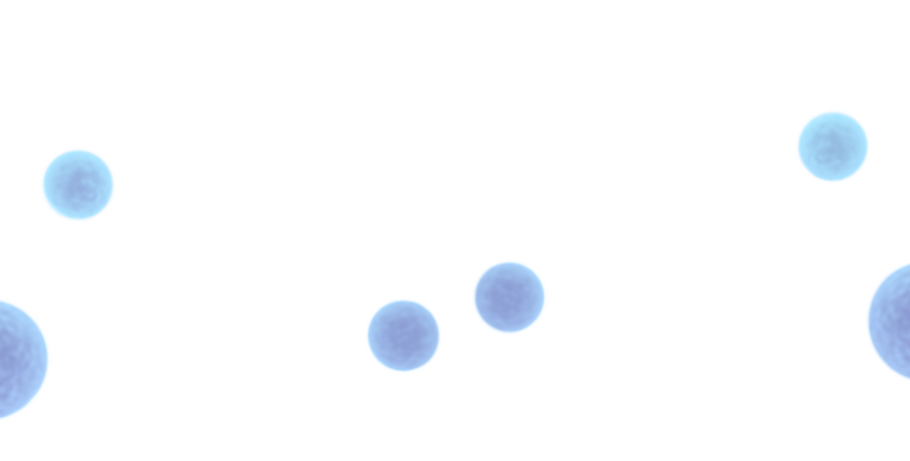

Пробиотики — это полезные бактерии,
которые восстанавливают микрофлору
кишечника и улучшают пищеварение
Устраняют дисбактериоз после
приема антибиотиков
Угнетают патогенную микрофлору
Защищают кишечник от инфекций
Стимулируют иммунитет
Пробиотики особенно необходимы
детям и взрослым
Принцип действия
При выборе пробиотика уделите особое внимание технологиям защиты бактерий, так как вы
можете купить пробиотик с погибшими и соответственно — бесполезными бактериями.